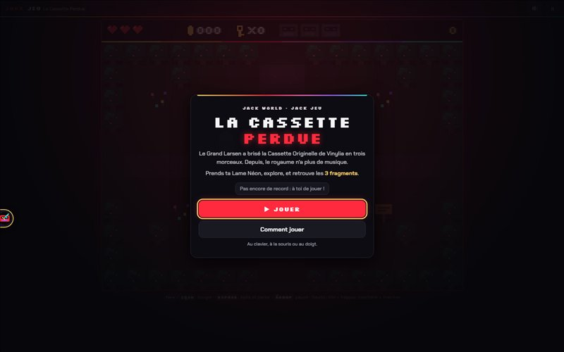

Explore le royaume
La Forêt des Échos, le Lac Miroir, le Marais Gris, la Plage des Bobines, la Grotte Rouge… jusqu'au Studio Hanté : chaque région cache son secret.
JACK WORLD · JACK JEU · AVENTURE
Le Grand Larsen a brisé la Cassette Originelle de Vinylia en trois morceaux. Depuis, le royaume n'a plus de musique. Prends ta Lame Néon, explore, et retrouve les 3 fragments.
Gratuit, dans ton navigateur, sans compte. Au clavier, à la souris ou au doigt.

L'HISTOIRE
Un jeu d'aventure en pixel, à explorer salle par salle.
La Forêt des Échos, le Lac Miroir, le Marais Gris, la Plage des Bobines, la Grotte Rouge… jusqu'au Studio Hanté : chaque région cache son secret.
Ta Lame Néon contre les monstres du Grand Larsen. Vide une salle pour faire apparaître un coffre.
Coupe les buissons, trouve les clés, ouvre les portes, et rassemble les 3 fragments de la Cassette Originelle.
Au bout du chemin, le boss qui a brisé la cassette t'attend. Garde tes cœurs pour lui.
Les pièces et les monstres vaincus rapportent des points ; finir vite donne un bonus. Ton meilleur score reste en mémoire.
Une musique de jeu vidéo à l'ancienne, avec un thème rien que pour le combat contre le boss.
COMMENT JOUER
Sur ordinateur, tablette ou téléphone.
↑↓←→ ou ZQSD. Au doigt : la croix rouge en bas à gauche. À la souris : maintiens le clic sur la carte.
Espace ou J, ou le bouton ⚔. Un clic ou un tap rapide frappe dans cette direction.
Mets-toi face à quelqu'un, un panneau ou un coffre, et appuie sur l'épée.
Échap ou P, ou le bouton ⏸ en haut de l'écran.
QUESTIONS
Oui. JACK JEU se joue dans ton navigateur, sans compte et sans rien à installer.
Oui : une croix et un bouton d'épée apparaissent à l'écran pour jouer au doigt. Tu peux aussi l'ajouter à ton écran d'accueil comme une appli.
Oui, dans le navigateur de cet appareil. La languette « Changer de site » permet aussi de sauvegarder ta progression de toutes les applis Jack World dans un fichier.
Retourne voir Mamie Bobine : elle te remet sur la bonne piste.

Trois fragments, un boss, et tout un royaume qui attend sa musique.